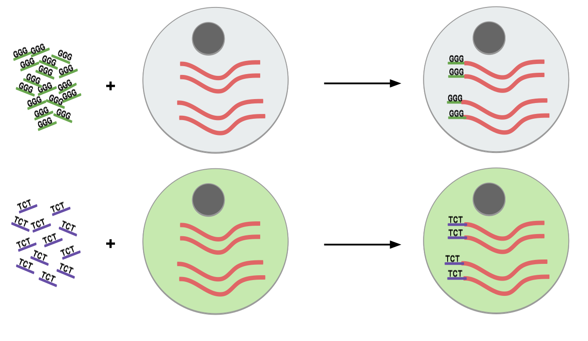

Plates, Batches, and Barcodes
Contributors
Questions
What is a batch when it comes to single cells?
What’s the difference between a barcode and an index?
What is batch effect and how do you prevent it?
What is a lane?
Objectives
How to set up plates to prevent batch effect
Proper naming conventions when dealing with scRNA-seq samples
Sorting Plates
.image-100[]
.left[Plates are N x M arrays of wells that cells are sorted, to then be individually amplified and sequenced.]
Speaker Notes
- Sorting plates are 2 dimensional arrays of wells that individual cells are placed into.
- Each cell in each well is tagged with a unique barcode and then primed to then be amplified and sequenced
- The method in which this is performed can yield significant pros and cons as we will see.
Sorting Plates
.image-80[]
Speaker Notes
- Here we see 3 different sorting strategies with different advantages for same treatment sample.
- In the top image: We see all wells are filled, to maximise the number of cells on a plate
- In the middle image: We see only the inner wells are filled, to maintain a protective border during library preparation
- In the bottom image: We see a striping pattern, which mitigates contamination of material from adjoining wells
Setting up Plates
.image-75[]
.center[What is the problem with this plate setup?]
Speaker Notes
- However, if we consider different treatment samples, then we must consider different challenges.
- What is the advantage of the top example, i.e. Several different treatments on one plate?
- What is the advantage of the bottom example, i.e. One treatment on one plate?
Setting up Plates
.image-50[]
.center[Batch effect (plate vs plate) cannot be separated from treatment effect in either scenario.]
Speaker Notes
- Trick question!
- In both examples, the treatment effect cannot be separated from any technical effect from the plate itself.
- For example, the biological effect of the yellow cells might just be the technical confounding effect from Batch 1.
- What can we do instead to reduce the effect of these technical confounding effects across treatments?
Setting up Plates
.image-50[]
.left[Either of these are better set-ups. Mixing columns is good, but not required. Ultimately, batch effect can now be separated from variable effect.]
Speaker Notes
- The answer is that we can balance the treatments across our plates better.
- By ensuring the same treatment occurs in comparable amounts in different plates, we can reduce the effect that each plate would have on the treatment.
Setting up Plates
.image-90[]
.center[Can’t mix samples on plates? Separate replicates evenly and process together.]
Speaker Notes
- If putting multiple treatments on the same plate is not an option, then having enough separated replicates will also allow for batch correction.
- Here, you can assess the variation between replicates, and thus batches, as well as between treatments.
What about sequencing lanes?
.center[So now it’s time to sequence our samples! How do we combine samples into sequencing lanes?]
.image-90[]
.center[This works well, but what if you have too many samples for one lane?]
Speaker Notes
- So now it’s time to sequence our samples! How do we combine samples into sequencing lanes?
- In many cases, it is enough to sequence 1 or 2 plates together in a single sequencing lane.
- But what if we wish to sequence 8 plates?
What about sequencing lanes?
.center[So now it’s time to sequence our samples! How do we combine samples into sequencing lanes?]
.image-90[]
.center[Does this look ok?]
Speaker Notes
- In the example show, Treatment A would go to the first sequencing lane.
- Treatment B would go to the second sequencing lane.
- Is it okay to sequence different treatments across different sequencing lanes?
–
.center[No! You’ve turned each treatment (A & B) into a batch!]
Speaker Notes
- No, because you’ve turned Treatment A and Treatment B into separate batches.
- This gives us the same unbalanced design we saw with the sorting plates.
What about sequencing lanes?
.image-75[]
.center[This is the way to balance your batches at the lane-level.]
Speaker Notes
- Instead we should balance the availability of each treatment across different sequencing lanes
- This way, each treatment is sequenced at the same time as another treatment, reducing the technical effect from the sequencing on the treatment.
Distinguishing cells in a plate
.image-60[]
- Cells are selected from a plate by their barcodes
- Barcodes must be unique
- e.g. 96 wells in a plate, need 96 barcodes to sequence them together
Speaker Notes
- How do we distinguish each cell in each well?
- Do we remember the physical location of that cell on that well, or do we tag it somehow?
- The answer is that each cell is given a unique barcode that distinguishes from other cells which have different cell barcodes.
What are Cell Barcodes?
.image-100[]
- Barcodes are added to all transcripts of a specific cell
- Transcripts with different cell barcodes originate from different cells
Speaker Notes
- What exactly are cell barcodes?
- These are usually short nucleotide barcodes that are added to all transcripts of a specific cell
- The idea is that transcripts with different cell barcodes originate from different cells.
What are Cell Barcodes?
.image-100[ ]
]
- Many different cell barcodes are used across many different cells
- Each well in a plate contains a cell, indexed by its cell barcode
Speaker Notes
- Within a plate, many different barcodes are used, and each cell is indexed by the cell barcode assigned to that well.
Questions about Cell Barcodes
.image-50[]
.left[Assuming you sequence one 96-well plate:]
-
How many cell barcodes are needed for a single lane?
-
How many cell barcodes are needed if you combine 10 plates into a single sequencing lane?
-
What would be the minimum length of the barcodes for each of the previous questions?
Speaker Notes
- Consider a 12 by 8 plate with 96 wells.
- How many cell barcodes are needed if you sequence a single plate?
- How many cell barcodes are needed if you sequence 10 plates into a single sequencing lane?
- What would be the minimum length of the barcodes for each of the previous questions?
–
.footnote[
- 96 unique barcodes per lane
- 96 x 10 = 960 unique barcodes per plate ]
Speaker Notes
- For one plate you would just need 96 unique barcodes
- For 10 plates you would need 960 unique barcodes
Questions about Cell Barcodes
.left[3) What would be the minimum length of the barcodes for each of the previous questions?]
.pull-left[
A single lane?
- 96 barcodes, 4 nucleotides for each base of a barcode
| Barcodes | Result |
|---|---|
| \(4^2 = 16\) | No, 2 bases is not enough |
| \(4^3 = 64\) | No, 3 bases is not enough |
| \(4^4 = 256\) | Yes, 4 bases is enough to cover 96 barcodes (and more!) |
]
Speaker Notes
- To answer the third question, we need to make some assumptions about the barcodes.
- If we assume a barcode is made up of a chain of 4 possible nucleotides, then we can solve the problem as a power of 4.
- For a single lane with only 96 barcodes, we require our barcodes to be of at least 4 base pairs in length.
– .pull-right[
10 plates in a single lane?
- 960 barcodes, 4 nucleotides for each base of a barcode
| Barcodes | Result |
|---|---|
| \(4^4 = 256\) | No, 4 bases is not enough |
| \(4^5 = 1024\) | Yes, 5 bases is enough to cover 960 barcodes (just barely!) |
]
Speaker Notes
- For 10 lanes with 960 barcodes, we require our barcodes to be of at least 5 base pairs in length.
- However these calculations also make one serious assumption about the barcodes.
Barcode Safeguarding
.pull-left[
-
Is 5 nucleotides really enough to capture 960 cells?
-
What could go wrong if all barcodes are separated by 1 bp, as shown? ]
.pull-right[ Edit distance = 1bp
AAAAA AAAAC AAAAG AAAAT AAACA AAAGA AAATA ····
CCCCC CCCCA CCCCG CCCCT CCCAC CCCGC CCCTC ····
·
·
· ]
Speaker Notes
- For example, we assume that all our barcodes are at minimum separated by a single base pair.
- This is known as an edit distance of 1.
- If we assume that every barcode is separated from every other barcode by 1 base pair, then 5 nucleotides is indeed enough to delineate 960 cells.
- However if there was even just one small sequencing error of 1 base pair on any barcode, it would immediately change that erronous barcode into another real barcode.
- That is to say, we have no way of detecting sequencing errors if we use an edit distance of 1.
Guarding against Sequencing Errors
.pull-left[
-
Sequencing errors can change the cell barcode
-
To guard against a 1 bp sequencing error, need to space barcodes by 2 bp
-
How many barcodes for a cell barcode of length 5 bp (ED = 2)? ] .pull-right[ Edit Distance = 2 bp
AAAAA AAACC AAAGG AAATT AACCA AAGGA AATTA ···· CCCCC CCCAA CCCGG CCCTT CCCAA CCGGC CCTTC ···· · · ·
]
Speaker Notes
- Let us try to rectify this by increasing the edit distance to 2.
- In the example barcodes shown we see barcodes of length 5, separated by 2 base pairs.
- How many unique cell barcodes can we make given these restrictions?
–
\[4^{5-1} = 512\]Speaker Notes
- The answer is half the amount that we need.
Edit Distance : General Principle
.pull-left[ e.g. For barcodes of length N=3:
-
Edit Distance of E=1: .center[
AAA AAC AAG AAT ACA ACC…] .center[64 barcodes] -
Edit Distance of E=2: .center[
AAA ACC AGG ATT CAA CCC…] .center[16 barcodes] -
Edit Distance of E=3: .center[
AAA CCC GGG TTT] .center[4 barcodes] ]
Speaker Notes
- Let us explore this more explicitly.
- Here we will be using barcodes only of length 3, and we will explore different edit distances of 1, 2, and 3.
- These yield 64, 16, and 4 barcodes respectively.
– .pull-right[ Number of Barcodes :
\[4^{N-(E-1)}\].center[For barcodes of length N, and Edit Distance of E.]
]
Speaker Notes
- This can be summarized by the formula given, where the length of the barcodes, minus one minus the edit distance, gives the number of available barcodes.
How many available barcodes are there?
.pull-left[
-
Barcodes typically limited to 4 main bases {A,C,T,G}.
-
Number of available barcodes depends on:
-
The length of the barcode
-
The edit distance between adjacent barcodes
-
-
Must take sequencing errors into account
]
Speaker Notes
- To summarize, barcodes are typically limited to 4 nucleotides, and the number of available barcodes depends on the length and edit distance.
- This is to ensure that sequencing errors are taken into account.
– .pull-right[
-
Availability is balance between barcode size vs. sequencing errors
-
Typically between 4-10 bases, range of cells that can be labelled:
\[[4^4, 4^{10}] = [256, 1048576]\] -
True range is lower due to edit distance. ]
Speaker Notes
- The availability of barcodes and the number of cells they can label is a design choice, where the technician must balance two opposing forces: barcode size vs sequencing errors.
- For the size, this means that for a barcode N bases long, there will 4 to the N barcodes available.
- Typically barcodes tend to span 4 to 10 bases, since longer barcodes tend to be more subjectable to sequencing errors.
- The true number of barcodes used is smaller than 4 to the N, due to the countermeasures used to space barcodes apart from one another, in order to reduce sequencing errors.
Design Factors in Barcodes
Is it better to use Longer or Shorter Barcodes?
| Longer | Shorter |
|---|---|
| Offer larger range of barcodes | Offer smaller range of barcodes |
| Prone to more sequencing errors | More robust against sequencing errors |
| Must increase edit distance significantly | A smaller edit distance is more acceptable |
| Can accommodate large edit distances | Cannot accommodate large edit distances |
Speaker Notes
- To weigh the pros and cons of longer and shorter barcodes, we need to take into account the likelihood of sequencing errors for a given size, and the resulting barcode address space given by the edit distance.
Cell Barcodes: Summary
.pull-left[
-
A single barcode sequence indexes a single cell
-
Every transcript in a specific cell has the same cell barcode
-
Barcodes are designed for smaller plate-based protocols, while for split-pool and similar techniques they are randomised.
-
Barcode use is limited by length and read depth
]
Speaker Notes
- To summarize cell barcodes, we should note the following
- A single barcode sequence indexes a single cell
- Every transcript in a specific cell has the same cell barcode
- Barcodes are designed for smaller plate-based protocols, while for split-pool and similar techniques they are randomised
- Barcode use is limited by length and read depth
–
Key Points
- Balanced batches and replicates allow bioinformatic batch correction
- A sequencing lane often contains multiple batches, and is itself a batch effect!
Thank you!
This material is the result of a collaborative work. Thanks to the Galaxy Training Network and all the contributors! Tutorial Content is licensed under
Creative Commons Attribution 4.0 International License.
Tutorial Content is licensed under
Creative Commons Attribution 4.0 International License.